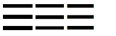

<!DOCTYPE html><html><head><meta charset="utf-8"><title>css高级技巧2 | 技术学派</title><meta name="viewport" content="width=device-width,initial-scale=1,maximum-scale=1"><meta name="keywords" content="IT培训, Python, 大数据, 人工智能, Web前端, PHP, "><meta name="description" content="css高级技巧二平常页面经常看到的一些效果，感觉实现起来很麻烦；其实使用某些技巧会变得容易很多1.Color + Border = Border-Color定义了一个元素的文字颜色，这个元素的边框颜色可以省略到1234567891011&amp;lt;style type=&quot;text/css&quot;&amp;gt;h1&amp;#123;    color:red;    border: 10px solid;&amp;#125;h1"><meta property="og:type" content="article"><meta property="og:title" content="css高级技巧2"><meta property="og:url" content="http://www.JiShuXuePai.com/blog/html/css高级技巧2/index.html"><meta property="og:site_name" content="技术学派"><meta property="og:description" content="css高级技巧二平常页面经常看到的一些效果，感觉实现起来很麻烦；其实使用某些技巧会变得容易很多1.Color + Border = Border-Color定义了一个元素的文字颜色，这个元素的边框颜色可以省略到1234567891011&amp;lt;style type=&quot;text/css&quot;&amp;gt;h1&amp;#123;    color:red;    border: 10px solid;&amp;#125;h1"><meta property="og:locale" content="zh-CN"><meta property="og:image" content="http://www.jishuxuepai.com/blog/html/css高级技巧2/a01.png"><meta property="og:updated_time" content="2018-05-11T08:14:14.226Z"><meta name="twitter:card" content="summary"><meta name="twitter:title" content="css高级技巧2"><meta name="twitter:description" content="css高级技巧二平常页面经常看到的一些效果，感觉实现起来很麻烦；其实使用某些技巧会变得容易很多1.Color + Border = Border-Color定义了一个元素的文字颜色，这个元素的边框颜色可以省略到1234567891011&amp;lt;style type=&quot;text/css&quot;&amp;gt;h1&amp;#123;    color:red;    border: 10px solid;&amp;#125;h1"><meta name="twitter:image" content="http://www.jishuxuepai.com/blog/html/css高级技巧2/a01.png"><link rel="stylesheet" href="/libs/bootstrap/bootstrap-grid.css"><link rel="stylesheet" href="/libs/font-awesome/css/font-awesome.min.css"><link rel="stylesheet" href="/libs/titillium-web/styles.css"><link rel="stylesheet" href="/libs/source-code-pro/styles.css"><link rel="stylesheet" href="/css/style.css"><script src="/libs/jquery/jquery.min.js"></script><link rel="stylesheet" href="/libs/lightgallery/css/lightgallery.min.css"><link rel="stylesheet" href="/libs/justified-gallery/justifiedGallery.min.css"><script>var _hmt=_hmt||[];!function(){var e=document.createElement("script");e.src="//hm.baidu.com/hm.js?4c1bd812de3c30edbaa2b803c66f0a04";var t=document.getElementsByTagName("script")[0];t.parentNode.insertBefore(e,t)}()</script></head></html><body><div id="wrap"><header id="header"><div id="header-outer" class="outer"><div class="container"><div class="container-inner"><div id="header-title"><h1 class="logo-wrap"><a href="/" class="logo"></a></h1></div><div id="header-inner" class="nav-container"><a id="main-nav-toggle" class="nav-icon fa fa-bars">菜单</a><div class="nav-container-inner"><ul id="main-nav"><li class="main-nav-list-item"><a class="main-nav-list-link" href="/">主页</a></li><li class="main-nav-list-item"><a class="main-nav-list-link" href="/edu/index.html">学编程</a></li><li class="main-nav-list-item"><a class="main-nav-list-link" href="/blog/">博客</a></li><li class="main-nav-list-item"><a class="main-nav-list-link" href="/tips.html">学习建议</a></li><li class="main-nav-list-item"><a class="main-nav-list-link" href="/about.html">关于</a></li></ul><nav id="sub-nav"><div id="search-form-wrap"><form class="search-form"><input type="text" class="ins-search-input search-form-input" placeholder="搜索"> <button type="submit" class="search-form-submit"></button></form><div class="ins-search"><div class="ins-search-mask"></div><div class="ins-search-container"><div class="ins-input-wrapper"><input type="text" class="ins-search-input" placeholder="想要查找什么..."> <span class="ins-close ins-selectable"><i class="fa fa-times-circle"></i></span></div><div class="ins-section-wrapper"><div class="ins-section-container"></div></div></div></div><script>window.INSIGHT_CONFIG={TRANSLATION:{POSTS:"文章",PAGES:"页面",CATEGORIES:"分类",TAGS:"标签",UNTITLED:"(未命名)"},ROOT_URL:"/",CONTENT_URL:"/content.json"}</script><script src="/js/insight.js"></script></div></nav></div></div></div></div></div></header><div class="container"><div class="main-body container-inner"><div class="main-body-inner"><section id="main"><div class="main-body-header"><h1 class="header"><a class="page-title-link" href="/categories/html/">html</a><div class="author">王平</div></h1></div><div class="main-body-content"><article id="post-css高级技巧2" class="article article-single article-type-post" itemscope itemprop="blogPost"><div class="article-inner"><header class="article-header"><h1 class="article-title" itemprop="name">css高级技巧2</h1></header><div class="article-meta"><div class="article-date"><a href="/blog/html/css高级技巧2/" class="article-date"><time datetime="2018-05-11T08:14:14.226Z" itemprop="datePublished">2018-05-11</time></a></div></div><div class="article-entry" itemprop="articleBody"><h1 id="css高级技巧二"><a href="#css高级技巧二" class="headerlink" title="css高级技巧二"></a>css高级技巧二</h1><blockquote><p>平常页面经常看到的一些效果，感觉实现起来很麻烦；其实使用某些技巧会变得容易很多</p></blockquote><h3 id="1-Color-Border-Border-Color"><a href="#1-Color-Border-Border-Color" class="headerlink" title="1.Color + Border = Border-Color"></a>1.Color + Border = <code>Border-Color</code></h3><p>定义了一个元素的文字颜色，这个元素的边框颜色可以省略到</p><figure class="highlight"><table><tr><td class="gutter"><pre><span class="line">1</span><br><span class="line">2</span><br><span class="line">3</span><br><span class="line">4</span><br><span class="line">5</span><br><span class="line">6</span><br><span class="line">7</span><br><span class="line">8</span><br><span class="line">9</span><br><span class="line">10</span><br><span class="line">11</span><br></pre></td><td class="code"><pre><span class="line">&lt;style type="text/css"&gt;</span><br><span class="line"><span class="selector-tag">h1</span>&#123;</span><br><span class="line">    <span class="attribute">color</span>:red;</span><br><span class="line">    <span class="attribute">border</span>: <span class="number">10px</span> solid;</span><br><span class="line">&#125;</span><br><span class="line"><span class="selector-tag">h1</span><span class="selector-pseudo">:hover</span>&#123;</span><br><span class="line">	<span class="attribute">color</span>:green;</span><br><span class="line">&#125;</span><br><span class="line">&lt;/style&gt;</span><br><span class="line"></span><br><span class="line">&lt;h1&gt;边框模式&lt;/h1&gt;</span><br></pre></td></tr></table></figure><p></p><h3 id="2-文字选中修饰"><a href="#2-文字选中修饰" class="headerlink" title="2.文字选中修饰"></a>2.文字选中修饰</h3><p>修改文字被选中时的效果</p><figure class="highlight css"><table><tr><td class="gutter"><pre><span class="line">1</span><br><span class="line">2</span><br><span class="line">3</span><br><span class="line">4</span><br><span class="line">5</span><br><span class="line">6</span><br><span class="line">7</span><br><span class="line">8</span><br><span class="line">9</span><br></pre></td><td class="code"><pre><span class="line">*<span class="selector-pseudo">::selection</span> &#123;</span><br><span class="line">    <span class="attribute">color</span>: <span class="number">#f00</span>;</span><br><span class="line">    <span class="attribute">background</span>: yellowgreen;</span><br><span class="line">&#125;</span><br><span class="line">*<span class="selector-pseudo">::-moz-selection</span> &#123;    </span><br><span class="line">    <span class="comment">/*Only Firefox still needs a prefix*/</span></span><br><span class="line">    <span class="attribute">color</span>: <span class="number">#f00</span>;</span><br><span class="line">    <span class="attribute">background</span>: yellowgreen;</span><br><span class="line">&#125;</span><br></pre></td></tr></table></figure><p></p><h3 id="3-visibility-visible"><a href="#3-visibility-visible" class="headerlink" title="3.visibility: visible"></a>3.visibility: visible</h3><p>可能会认为两个元素都不显示——然而事实上整个父元素都被隐藏了，而子元素不会</p><figure class="highlight"><table><tr><td class="gutter"><pre><span class="line">1</span><br><span class="line">2</span><br><span class="line">3</span><br><span class="line">4</span><br><span class="line">5</span><br><span class="line">6</span><br><span class="line">7</span><br><span class="line">8</span><br><span class="line">9</span><br><span class="line">10</span><br><span class="line">11</span><br></pre></td><td class="code"><pre><span class="line"><span class="selector-class">.hidden</span> &#123;</span><br><span class="line">  <span class="attribute">visibility</span>: hidden;</span><br><span class="line">&#125;</span><br><span class="line"><span class="selector-class">.hidden</span> <span class="selector-class">.button</span> &#123;</span><br><span class="line">  <span class="attribute">visibility</span>: visible;</span><br><span class="line">&#125;</span><br><span class="line"></span><br><span class="line">&lt;div class="wrapper hidden"&gt;</span><br><span class="line">     &lt;button class="button" id="button"&gt;子元素不会Hide&lt;/button&gt;</span><br><span class="line">     &lt;p&gt;整个父元素都被隐藏了，而子元素不会&lt;/p&gt;</span><br><span class="line">&lt;/div&gt;</span><br></pre></td></tr></table></figure><p></p><h3 id="4-position-sticky"><a href="#4-position-sticky" class="headerlink" title="4.position: sticky"></a>4.position: sticky</h3><p>运行效果和<code>fixed</code>相同，但不会挡住任何元素，只有Mozilla和Safari浏览器支持这一属性</p><figure class="highlight css"><table><tr><td class="gutter"><pre><span class="line">1</span><br><span class="line">2</span><br><span class="line">3</span><br><span class="line">4</span><br><span class="line">5</span><br><span class="line">6</span><br><span class="line">7</span><br></pre></td><td class="code"><pre><span class="line">//支持的浏览器中得到一个sticky属性的元素，而在不支持的浏览器中它将会是一个普通的元素。这在你需要建立一个不可替代的，可以移动的元素的移动端页面的时候非常实用</span><br><span class="line"></span><br><span class="line"><span class="selector-class">.sticky</span> &#123;</span><br><span class="line">  <span class="attribute">position</span>: static;  </span><br><span class="line">  <span class="attribute">position</span>: sticky;</span><br><span class="line">  <span class="attribute">top</span>: <span class="number">0px</span>;</span><br><span class="line">&#125;</span><br></pre></td></tr></table></figure><h3 id="5-不使用图片的菜单图标"><a href="#5-不使用图片的菜单图标" class="headerlink" title="5.不使用图片的菜单图标"></a>5.不使用图片的菜单图标</h3><p></p><figure class="highlight html"><table><tr><td class="gutter"><pre><span class="line">1</span><br><span class="line">2</span><br><span class="line">3</span><br></pre></td><td class="code"><pre><span class="line"><span class="tag">&lt;<span class="name">a</span> <span class="attr">class</span>=<span class="string">"shadow-icon"</span> <span class="attr">href</span>=<span class="string">"#"</span>&gt;</span><span class="tag">&lt;/<span class="name">a</span>&gt;</span></span><br><span class="line"><span class="tag">&lt;<span class="name">a</span> <span class="attr">class</span>=<span class="string">"gradient-icon"</span> <span class="attr">href</span>=<span class="string">"#"</span>&gt;</span><span class="tag">&lt;/<span class="name">a</span>&gt;</span></span><br><span class="line"><span class="tag">&lt;<span class="name">a</span> <span class="attr">class</span>=<span class="string">"utf-8"</span> <span class="attr">href</span>=<span class="string">"#"</span>&gt;</span>☰<span class="tag">&lt;/<span class="name">a</span>&gt;</span></span><br></pre></td></tr></table></figure><figure class="highlight css"><table><tr><td class="gutter"><pre><span class="line">1</span><br><span class="line">2</span><br><span class="line">3</span><br><span class="line">4</span><br><span class="line">5</span><br><span class="line">6</span><br><span class="line">7</span><br><span class="line">8</span><br><span class="line">9</span><br><span class="line">10</span><br><span class="line">11</span><br><span class="line">12</span><br><span class="line">13</span><br><span class="line">14</span><br><span class="line">15</span><br><span class="line">16</span><br><span class="line">17</span><br><span class="line">18</span><br><span class="line">19</span><br><span class="line">20</span><br><span class="line">21</span><br><span class="line">22</span><br><span class="line">23</span><br><span class="line">24</span><br><span class="line">25</span><br><span class="line">26</span><br><span class="line">27</span><br><span class="line">28</span><br><span class="line">29</span><br><span class="line">30</span><br></pre></td><td class="code"><pre><span class="line"><span class="selector-tag">a</span> &#123;</span><br><span class="line">  <span class="attribute">color</span>: black;</span><br><span class="line">  <span class="attribute">text-decoration</span>: none;</span><br><span class="line">  <span class="attribute">float</span>: left;</span><br><span class="line">  <span class="attribute">width</span>: <span class="number">50px</span>;</span><br><span class="line">  <span class="attribute">height</span>: <span class="number">50px</span>;</span><br><span class="line">&#125;</span><br><span class="line"><span class="selector-class">.shadow-icon</span> &#123;</span><br><span class="line">  <span class="attribute">position</span>: relative;</span><br><span class="line">  <span class="attribute">margin</span>: <span class="number">0</span> <span class="number">5px</span> <span class="number">0</span> <span class="number">0</span>;</span><br><span class="line">&#125;</span><br><span class="line"><span class="selector-class">.shadow-icon</span><span class="selector-pseudo">:after</span> &#123;</span><br><span class="line">  <span class="attribute">content</span>: <span class="string">""</span>;</span><br><span class="line">  <span class="attribute">position</span>: absolute;</span><br><span class="line">  <span class="attribute">left</span>: <span class="number">0</span>;</span><br><span class="line">  <span class="attribute">top</span>: -<span class="number">50px</span>;</span><br><span class="line">  <span class="attribute">height</span>: <span class="number">100%</span>;</span><br><span class="line">  <span class="attribute">width</span>: <span class="number">100%</span>;</span><br><span class="line">  <span class="attribute">box-shadow</span>: <span class="number">0</span> <span class="number">6px</span> <span class="number">0</span> <span class="number">#000</span>, <span class="number">0</span> <span class="number">18px</span> <span class="number">0</span> <span class="number">#fff</span>, <span class="number">0</span> <span class="number">25px</span> <span class="number">0</span> <span class="number">#000</span>, <span class="number">0</span> <span class="number">37px</span> <span class="number">0</span> <span class="number">#fff</span>, <span class="number">0</span> <span class="number">44px</span> <span class="number">0</span> <span class="number">#000</span>;</span><br><span class="line">&#125;</span><br><span class="line"><span class="selector-class">.gradient-icon</span> &#123;</span><br><span class="line">    <span class="attribute">background</span>:<span class="built_in">linear-gradient</span>(to bottom, #000 0%, #000 13%, transparent 13%, transparent 43%, #000 43%, #000 57%, transparent 57%, transparent 85%, #000 85%, #000 98%, transparent 98%);</span><br><span class="line">  <span class="attribute">height</span>: <span class="number">44px</span>;</span><br><span class="line">  <span class="attribute">width</span>: <span class="number">48px</span>;</span><br><span class="line">&#125;</span><br><span class="line"><span class="selector-class">.utf-8</span> &#123;</span><br><span class="line">  <span class="attribute">font-size</span>: <span class="number">60px</span>;</span><br><span class="line">  <span class="attribute">font-weight</span>: bold;</span><br><span class="line">  <span class="attribute">line-height</span>: <span class="number">45px</span>;</span><br><span class="line">&#125;</span><br></pre></td></tr></table></figure><h3 id="6-高级CSS计数器"><a href="#6-高级CSS计数器" class="headerlink" title="6.高级CSS计数器"></a>6.高级CSS计数器</h3><p>纯css实现选中个数，CSS中是可以使用计数器的：</p><figure class="highlight html"><table><tr><td class="gutter"><pre><span class="line">1</span><br><span class="line">2</span><br><span class="line">3</span><br><span class="line">4</span><br><span class="line">5</span><br><span class="line">6</span><br><span class="line">7</span><br><span class="line">8</span><br><span class="line">9</span><br><span class="line">10</span><br><span class="line">11</span><br><span class="line">12</span><br><span class="line">13</span><br><span class="line">14</span><br><span class="line">15</span><br></pre></td><td class="code"><pre><span class="line"><span class="tag">&lt;<span class="name">ol</span> <span class="attr">class</span>=<span class="string">"list"</span>&gt;</span>  </span><br><span class="line">    <span class="tag">&lt;<span class="name">li</span>&gt;</span>AA<span class="tag">&lt;/<span class="name">li</span>&gt;</span></span><br><span class="line">    <span class="tag">&lt;<span class="name">li</span>&gt;</span>BB<span class="tag">&lt;/<span class="name">li</span>&gt;</span></span><br><span class="line">    <span class="tag">&lt;<span class="name">li</span>&gt;</span>CC<span class="tag">&lt;/<span class="name">li</span>&gt;</span></span><br><span class="line"><span class="tag">&lt;/<span class="name">ol</span>&gt;</span></span><br><span class="line"></span><br><span class="line">.list &#123;</span><br><span class="line">    counter-reset: i;                  //重置</span><br><span class="line">&#125;</span><br><span class="line">.list &gt; li &#123;</span><br><span class="line">    counter-increment: i;              //计数</span><br><span class="line">&#125;</span><br><span class="line">.list li:after &#123;</span><br><span class="line">    content: "[" counter(i) "]";       //打印结果</span><br><span class="line">&#125;</span><br></pre></td></tr></table></figure><blockquote><p>案例效果应用实例参考：</p></blockquote><figure class="highlight html"><table><tr><td class="gutter"><pre><span class="line">1</span><br><span class="line">2</span><br><span class="line">3</span><br><span class="line">4</span><br><span class="line">5</span><br><span class="line">6</span><br><span class="line">7</span><br><span class="line">8</span><br><span class="line">9</span><br><span class="line">10</span><br><span class="line">11</span><br><span class="line">12</span><br><span class="line">13</span><br><span class="line">14</span><br><span class="line">15</span><br><span class="line">16</span><br></pre></td><td class="code"><pre><span class="line"></span><br><span class="line"></span><br><span class="line"><span class="comment">&lt;!-- html --&gt;</span></span><br><span class="line"><span class="tag">&lt;<span class="name">div</span> <span class="attr">class</span>=<span class="string">"languages"</span>&gt;</span>  </span><br><span class="line">  <span class="tag">&lt;<span class="name">input</span> <span class="attr">id</span>=<span class="string">"c"</span> <span class="attr">type</span>=<span class="string">"checkbox"</span>&gt;</span><span class="tag">&lt;<span class="name">label</span> <span class="attr">for</span>=<span class="string">"c"</span>&gt;</span>C<span class="tag">&lt;/<span class="name">label</span>&gt;</span></span><br><span class="line">  <span class="tag">&lt;<span class="name">input</span> <span class="attr">id</span>=<span class="string">"C++"</span> <span class="attr">type</span>=<span class="string">"checkbox"</span>&gt;</span><span class="tag">&lt;<span class="name">label</span> <span class="attr">for</span>=<span class="string">"C++"</span>&gt;</span>C++<span class="tag">&lt;/<span class="name">label</span>&gt;</span></span><br><span class="line">  <span class="tag">&lt;<span class="name">input</span> <span class="attr">id</span>=<span class="string">"C#"</span> <span class="attr">type</span>=<span class="string">"checkbox"</span>&gt;</span><span class="tag">&lt;<span class="name">label</span> <span class="attr">for</span>=<span class="string">"C#"</span>&gt;</span>C#<span class="tag">&lt;/<span class="name">label</span>&gt;</span></span><br><span class="line">  <span class="tag">&lt;<span class="name">input</span> <span class="attr">id</span>=<span class="string">"Java"</span> <span class="attr">type</span>=<span class="string">"checkbox"</span>&gt;</span><span class="tag">&lt;<span class="name">label</span> <span class="attr">for</span>=<span class="string">"Java"</span>&gt;</span>Java<span class="tag">&lt;/<span class="name">label</span>&gt;</span></span><br><span class="line">  <span class="tag">&lt;<span class="name">input</span> <span class="attr">id</span>=<span class="string">"JavaScript"</span> <span class="attr">type</span>=<span class="string">"checkbox"</span>&gt;</span><span class="tag">&lt;<span class="name">label</span> <span class="attr">for</span>=<span class="string">"JavaScript"</span>&gt;</span>JavaScript<span class="tag">&lt;/<span class="name">label</span>&gt;</span></span><br><span class="line">  <span class="tag">&lt;<span class="name">input</span> <span class="attr">id</span>=<span class="string">"PHP"</span> <span class="attr">type</span>=<span class="string">"checkbox"</span>&gt;</span><span class="tag">&lt;<span class="name">label</span> <span class="attr">for</span>=<span class="string">"PHP"</span>&gt;</span>PHP<span class="tag">&lt;/<span class="name">label</span>&gt;</span></span><br><span class="line">  <span class="tag">&lt;<span class="name">input</span> <span class="attr">id</span>=<span class="string">"Python"</span> <span class="attr">type</span>=<span class="string">"checkbox"</span>&gt;</span><span class="tag">&lt;<span class="name">label</span> <span class="attr">for</span>=<span class="string">"Python"</span>&gt;</span>Python<span class="tag">&lt;/<span class="name">label</span>&gt;</span></span><br><span class="line">  <span class="tag">&lt;<span class="name">input</span> <span class="attr">id</span>=<span class="string">"Ruby"</span> <span class="attr">type</span>=<span class="string">"checkbox"</span>&gt;</span><span class="tag">&lt;<span class="name">label</span> <span class="attr">for</span>=<span class="string">"Ruby"</span>&gt;</span>Ruby<span class="tag">&lt;/<span class="name">label</span>&gt;</span></span><br><span class="line"><span class="tag">&lt;/<span class="name">div</span>&gt;</span>  </span><br><span class="line"><span class="tag">&lt;<span class="name">p</span> <span class="attr">class</span>=<span class="string">"total"</span>&gt;</span>  </span><br><span class="line">  总计:</span><br><span class="line"><span class="tag">&lt;/<span class="name">p</span>&gt;</span></span><br></pre></td></tr></table></figure><figure class="highlight css"><table><tr><td class="gutter"><pre><span class="line">1</span><br><span class="line">2</span><br><span class="line">3</span><br><span class="line">4</span><br><span class="line">5</span><br><span class="line">6</span><br><span class="line">7</span><br><span class="line">8</span><br><span class="line">9</span><br></pre></td><td class="code"><pre><span class="line"><span class="selector-class">.languages</span> &#123;</span><br><span class="line">  <span class="attribute">counter-reset</span>: characters;</span><br><span class="line">&#125;</span><br><span class="line"><span class="selector-tag">input</span><span class="selector-pseudo">:checked</span> &#123;  </span><br><span class="line">  <span class="attribute">counter-increment</span>: characters;</span><br><span class="line">&#125;</span><br><span class="line"><span class="selector-class">.total</span><span class="selector-pseudo">:after</span> &#123;</span><br><span class="line">  <span class="attribute">content</span>: <span class="built_in">counter</span>(characters);</span><br><span class="line">&#125;</span><br></pre></td></tr></table></figure><p></p><h3 id="7-object-fit"><a href="#7-object-fit" class="headerlink" title="7.object-fit"></a>7.object-fit</h3><p><code>object-fit</code>类似<code>background-size</code>,但是稍微有些差异</p><figure class="highlight css"><table><tr><td class="gutter"><pre><span class="line">1</span><br><span class="line">2</span><br><span class="line">3</span><br><span class="line">4</span><br><span class="line">5</span><br><span class="line">6</span><br></pre></td><td class="code"><pre><span class="line">//具体有5个值如下</span><br><span class="line"><span class="selector-class">.fill</span> &#123; <span class="attribute">object-fit</span>: fill; &#125;</span><br><span class="line"><span class="selector-class">.contain</span> &#123; <span class="attribute">object-fit</span>: contain; &#125;</span><br><span class="line"><span class="selector-class">.cover</span> &#123; <span class="attribute">object-fit</span>: cover; &#125;</span><br><span class="line"><span class="selector-class">.none</span> &#123; <span class="attribute">object-fit</span>: none; &#125;</span><br><span class="line"><span class="selector-class">.scale-down</span> &#123; <span class="attribute">object-fit</span>: scale-down; &#125;</span><br></pre></td></tr></table></figure><ul><li><code>fill</code>:默认值。填充，可替换元素填满整个内容区域，可能会改变长宽比，导致拉伸</li><li><code>contain</code>:包含，保持原始的尺寸比例，保证可替换元素完整显示，宽度或高度至少有一个和内容区域的宽度或高度一致，部分内容会空白</li><li><code>cover</code>: 覆盖，保持原始的尺寸比例，保证内容区域被填满。因此，可替换元素可能会被切掉一部分，从而不能完整展示</li><li><code>none</code>:保持可替换元素原尺寸和比例</li><li><code>scale-down</code>:等比缩小依次设置了none或contain, 最终呈现的是尺寸比较小的那个</li></ul><h3 id="8-currentColor"><a href="#8-currentColor" class="headerlink" title="8.currentColor"></a>8.currentColor</h3><p><em>currentColor是 color 属性的值，具体意思是指：currentColor关键字的使用值是 color 属性值的计算值</em></p><p><code>任意替换性</code>需要使用颜色值的地方，都可以使用<code>currentColor</code>替换，比方说背景色 – <code>background-color</code>, 渐变色 – <code>gradient</code>, 盒阴影 – <code>box-shadow</code>, SVG的填充色 – <code>fill</code>等等</p><figure class="highlight html"><table><tr><td class="gutter"><pre><span class="line">1</span><br><span class="line">2</span><br><span class="line">3</span><br><span class="line">4</span><br></pre></td><td class="code"><pre><span class="line">.link &#123;</span><br><span class="line">    display: inline-block;</span><br><span class="line">    background-color: currentColor;  /* 控制颜色 */</span><br><span class="line">&#125;</span><br></pre></td></tr></table></figure><p>svg效果举例</p><figure class="highlight css"><table><tr><td class="gutter"><pre><span class="line">1</span><br><span class="line">2</span><br><span class="line">3</span><br><span class="line">4</span><br><span class="line">5</span><br><span class="line">6</span><br><span class="line">7</span><br><span class="line">8</span><br><span class="line">9</span><br><span class="line">10</span><br><span class="line">11</span><br><span class="line">12</span><br><span class="line">13</span><br><span class="line">14</span><br><span class="line">15</span><br><span class="line">16</span><br><span class="line">17</span><br><span class="line">18</span><br></pre></td><td class="code"><pre><span class="line"><span class="comment">/*a 标签*/</span></span><br><span class="line"><span class="selector-class">.button</span> &#123;</span><br><span class="line">    <span class="attribute">color</span>: <span class="number">#01B19A</span>;</span><br><span class="line">    <span class="attribute">font-size</span>: <span class="number">1.4em</span>;</span><br><span class="line">&#125;</span><br><span class="line"><span class="selector-class">.button</span><span class="selector-pseudo">:hover</span>, <span class="selector-class">.button</span><span class="selector-pseudo">:focus</span> &#123;</span><br><span class="line">    <span class="attribute">color</span>: <span class="number">#117B6F</span>;</span><br><span class="line">&#125;</span><br><span class="line"><span class="selector-class">.button</span><span class="selector-pseudo">:active</span> &#123;</span><br><span class="line">    <span class="attribute">color</span>: <span class="number">#89027B</span>;</span><br><span class="line">&#125;</span><br><span class="line"></span><br><span class="line"><span class="comment">/*svg 标签*/</span></span><br><span class="line"><span class="selector-class">.button</span> <span class="selector-tag">svg</span> &#123;</span><br><span class="line">    <span class="attribute">height</span>: <span class="number">17px</span>;</span><br><span class="line">    <span class="attribute">width</span>: <span class="number">17px</span>;</span><br><span class="line">    <span class="attribute">fill</span>: currentColor;</span><br><span class="line">&#125;</span><br></pre></td></tr></table></figure><h3 id="9-z-index的过渡"><a href="#9-z-index的过渡" class="headerlink" title="9.z-index的过渡"></a>9.z-index的过渡</h3><p><code>z-index</code>同样支持过渡效果</p><figure class="highlight"><table><tr><td class="gutter"><pre><span class="line">1</span><br><span class="line">2</span><br><span class="line">3</span><br><span class="line">4</span><br><span class="line">5</span><br><span class="line">6</span><br><span class="line">7</span><br><span class="line">8</span><br><span class="line">9</span><br><span class="line">10</span><br><span class="line">11</span><br><span class="line">12</span><br><span class="line">13</span><br><span class="line">14</span><br><span class="line">15</span><br><span class="line">16</span><br><span class="line">17</span><br><span class="line">18</span><br><span class="line">19</span><br><span class="line">20</span><br><span class="line">21</span><br><span class="line">22</span><br><span class="line">23</span><br><span class="line">24</span><br><span class="line">25</span><br><span class="line">26</span><br><span class="line">27</span><br><span class="line">28</span><br><span class="line">29</span><br><span class="line">30</span><br><span class="line">31</span><br><span class="line">32</span><br><span class="line">33</span><br><span class="line">34</span><br><span class="line">35</span><br><span class="line">36</span><br><span class="line">37</span><br><span class="line">38</span><br><span class="line">39</span><br><span class="line">40</span><br><span class="line">41</span><br><span class="line">42</span><br><span class="line">43</span><br><span class="line">44</span><br><span class="line">45</span><br><span class="line">46</span><br><span class="line">47</span><br><span class="line">48</span><br><span class="line">49</span><br><span class="line">50</span><br><span class="line">51</span><br><span class="line">52</span><br></pre></td><td class="code"><pre><span class="line">&lt;style type="text/css"&gt;</span><br><span class="line"><span class="selector-tag">section</span> &#123;</span><br><span class="line">	<span class="attribute">display</span>: block;</span><br><span class="line">	<span class="attribute">position</span>: relative;</span><br><span class="line">&#125;</span><br><span class="line"><span class="selector-tag">div</span> &#123;</span><br><span class="line">	<span class="attribute">position</span>: absolute;</span><br><span class="line">	<span class="attribute">width</span>: <span class="number">100px</span>;</span><br><span class="line">	<span class="attribute">height</span>: <span class="number">200px</span>;</span><br><span class="line">&#125;</span><br><span class="line"><span class="selector-class">.one</span> &#123;</span><br><span class="line">	<span class="attribute">z-index</span>: <span class="number">1</span>;</span><br><span class="line">	<span class="attribute">top</span>: <span class="number">0</span>;</span><br><span class="line">	<span class="attribute">left</span>: <span class="number">0</span>;</span><br><span class="line">	<span class="attribute">width</span>: <span class="number">800px</span>;</span><br><span class="line">	<span class="attribute">background</span>: <span class="built_in">hsla</span>(1,70%,50%,.5);</span><br><span class="line">	<span class="attribute">-moz-transition</span>:all <span class="number">3s</span>;</span><br><span class="line">	<span class="attribute">-webkit-transition</span>:all <span class="number">3s</span>;</span><br><span class="line">	<span class="attribute">transition</span>:all <span class="number">3s</span>;</span><br><span class="line">&#125;</span><br><span class="line"><span class="selector-class">.one</span><span class="selector-pseudo">:hover</span> &#123;</span><br><span class="line">	<span class="attribute">z-index</span>: <span class="number">6</span>;</span><br><span class="line">	<span class="attribute">background</span>: <span class="built_in">hsla</span>(1,100%,10%,1);</span><br><span class="line">	<span class="attribute">-moz-transition</span>:all <span class="number">3s</span>;</span><br><span class="line">	<span class="attribute">-webkit-transition</span>:all <span class="number">3s</span>;</span><br><span class="line">	<span class="attribute">transition</span>:all <span class="number">3s</span>;</span><br><span class="line">&#125;</span><br><span class="line"><span class="selector-class">.two</span> &#123;</span><br><span class="line">	<span class="attribute">z-index</span>: <span class="number">2</span>;</span><br><span class="line">	<span class="attribute">top</span>: <span class="number">120px</span>;</span><br><span class="line">	<span class="attribute">left</span>: <span class="number">0</span>;</span><br><span class="line">	<span class="attribute">background</span>: <span class="built_in">hsla</span>(50,70%,50%,.5);</span><br><span class="line">&#125;</span><br><span class="line"><span class="selector-class">.three</span> &#123;</span><br><span class="line">	<span class="attribute">z-index</span>: <span class="number">3</span>;</span><br><span class="line">	<span class="attribute">top</span>: <span class="number">120px</span>;</span><br><span class="line">	<span class="attribute">left</span>: <span class="number">160px</span>;</span><br><span class="line">	<span class="attribute">background</span>: <span class="built_in">hsla</span>(120,70%,50%,.5);</span><br><span class="line">&#125;</span><br><span class="line"><span class="selector-class">.four</span> &#123;</span><br><span class="line">	<span class="attribute">z-index</span>: <span class="number">4</span>;</span><br><span class="line">	<span class="attribute">top</span>: <span class="number">120px</span>;</span><br><span class="line">	<span class="attribute">left</span>: <span class="number">320px</span>;</span><br><span class="line">	<span class="attribute">background</span>: <span class="built_in">hsla</span>(220,70%,50%,.5);</span><br><span class="line">&#125;</span><br><span class="line"><span class="selector-class">.five</span> &#123;</span><br><span class="line">	<span class="attribute">z-index</span>: <span class="number">5</span>;</span><br><span class="line">	<span class="attribute">top</span>: <span class="number">120px</span>;</span><br><span class="line">	<span class="attribute">left</span>: <span class="number">480px</span>;</span><br><span class="line">	<span class="attribute">background</span>: <span class="built_in">hsla</span>(300,70%,50%,.5);</span><br><span class="line">&#125;</span><br><span class="line">&lt;/style&gt;</span><br></pre></td></tr></table></figure><figure class="highlight html"><table><tr><td class="gutter"><pre><span class="line">1</span><br><span class="line">2</span><br><span class="line">3</span><br><span class="line">4</span><br><span class="line">5</span><br><span class="line">6</span><br><span class="line">7</span><br></pre></td><td class="code"><pre><span class="line"><span class="tag">&lt;<span class="name">section</span>&gt;</span></span><br><span class="line">	<span class="tag">&lt;<span class="name">div</span> <span class="attr">class</span>=<span class="string">"one"</span>&gt;</span>One<span class="tag">&lt;/<span class="name">div</span>&gt;</span></span><br><span class="line">	<span class="tag">&lt;<span class="name">div</span> <span class="attr">class</span>=<span class="string">"two"</span>&gt;</span>Two<span class="tag">&lt;/<span class="name">div</span>&gt;</span></span><br><span class="line">	<span class="tag">&lt;<span class="name">div</span> <span class="attr">class</span>=<span class="string">"three"</span>&gt;</span>Three<span class="tag">&lt;/<span class="name">div</span>&gt;</span></span><br><span class="line">	<span class="tag">&lt;<span class="name">div</span> <span class="attr">class</span>=<span class="string">"four"</span>&gt;</span>Four<span class="tag">&lt;/<span class="name">div</span>&gt;</span></span><br><span class="line">	<span class="tag">&lt;<span class="name">div</span> <span class="attr">class</span>=<span class="string">"five"</span>&gt;</span>Five<span class="tag">&lt;/<span class="name">div</span>&gt;</span></span><br><span class="line"><span class="tag">&lt;/<span class="name">section</span>&gt;</span></span><br></pre></td></tr></table></figure><p></p><h3 id="10-Blend-modes（合成模式）"><a href="#10-Blend-modes（合成模式）" class="headerlink" title="10.Blend modes（合成模式）"></a>10.<strong>Blend modes</strong>（合成模式）</h3><p>在CSS中有16种可用的混合模式。<code>normal</code> (默认的混合模式), <code>multiply</code>, <code>screen</code>, <code>overlay</code>, <code>darken</code>, <code>lighten</code>, <code>color-dodge</code>, <code>color-burn</code>, <code>hard-light</code>, <code>soft-light</code>, <code>difference</code>, <code>exclusion</code>, <code>hue</code>, <code>saturation</code>, <code>color</code> 和 <code>luminosity</code></p><figure class="highlight css"><table><tr><td class="gutter"><pre><span class="line">1</span><br><span class="line">2</span><br><span class="line">3</span><br><span class="line">4</span><br><span class="line">5</span><br><span class="line">6</span><br></pre></td><td class="code"><pre><span class="line"><span class="selector-class">.box</span> &#123;</span><br><span class="line">    <span class="attribute">background</span>: <span class="number">#fff</span>;</span><br><span class="line">&#125;</span><br><span class="line"><span class="selector-class">.box</span> <span class="selector-tag">img</span> &#123;</span><br><span class="line">    <span class="attribute">mix-blend-mode</span>: darken; </span><br><span class="line">&#125;</span><br></pre></td></tr></table></figure><blockquote><p>合成背景图层：<code>background-blend-mode</code>属性</p></blockquote><figure class="highlight css"><table><tr><td class="gutter"><pre><span class="line">1</span><br><span class="line">2</span><br><span class="line">3</span><br><span class="line">4</span><br><span class="line">5</span><br></pre></td><td class="code"><pre><span class="line"><span class="selector-tag">div</span>&#123;</span><br><span class="line">  <span class="attribute">background-image</span>: <span class="built_in">url</span>(image.png);</span><br><span class="line">  <span class="attribute">background-color</span>: orange;</span><br><span class="line">  <span class="attribute">background-blend-mode</span>: screen;  </span><br><span class="line">&#125;</span><br></pre></td></tr></table></figure><ul><li>normal：默认的混合模式，混合色的像素会透过所用的颜色显示出来。</li><li>multiply：正片叠底模式。查看么诶个通道的颜色信息，选择基色或混合色复合。结果的颜色通常都比源或目标的颜色要暗。<strong>任何颜色和黑色相乘都得到黑色，任何颜色和白色相乘都会保留原来的颜色。</strong></li><li>screen：滤色模式。查看每个通道的颜色信息，并将混合色的互补色和技术复合。结果总是较亮的颜色。<strong>任何颜色和白色进行滤色都得到白色，任何颜色和黑色进行滤色都会保留原来的颜色。</strong></li><li>overlay：叠加模式。复合或过滤颜色，取决于基色（backdrop）的值。图像或颜色在现有的像素上叠加，同时保留基色的明暗度。</li><li>darken：变暗模式。查看每个通道的颜色信息，并选择基色或混合色中较暗的颜色作为结果色。比混合色亮的像素被替换，比混合色暗的像素保存不变。</li><li>lighten：变亮模式。选择基色或混合色中较亮的颜色作为结果色。比混合色暗的像素被替换，比混合色亮的像素保存不变。</li><li>color-dodge：颜色减淡模式。查看每个通道中的颜色信息，并通过减小对比度使基色变亮以反映混合色。与黑色混合不发生任何变化。</li><li>color-burn：颜色加深模式。查看每个通道中的颜色信息，并通过增加对比度使基色变暗以及反映混合色。与白色混合不会发生变化。</li><li>hard-light强光模式。符合或过滤颜色，具体取决于混合色。此效果与耀眼的聚光灯照在图像上相似。如果混合色比50%的灰度色亮，则图像变亮。如果混合色比50%的灰度色暗，则图像变暗</li><li>soft-light：柔光模式。使颜色变亮或变暗，具体取决于混合色。此效果与发散的聚光灯照在图像上的效果类似。如果混合色比50%的灰度色亮，则图像变亮，就像被减淡一样。如果混合色比50%的灰度色暗，则图像变暗，就像被加深了一样。</li><li>difference：差值模式。查看每个通道的颜色信息，并从基色中减去混合色，或从混合色中减去基色。具体取决于哪一个颜色的亮度值更大。与白色混合将反转基色值，与黑色混合则不产生变化。</li><li>exclusion：排除模式。插件一种与“差值”模式相似但对比度更低的效果。与白色混合将反转基色值，与黑色混合不发生变化。</li><li>hue：色相模式。“色相”模式只用“混合色”颜色的色相值进行着色，而使饱和度和亮度值保持不变。</li><li>saturation：饱和度模式。“饱和度”模式的作用方式与“色相”模式相似，它只用“混合色”颜色的饱和度值进行着色，而使色相值和亮度值保持不变。</li><li>color：颜色模式。“颜色”模式能够使用“混合色”颜色的饱和度值和色相值同时进行着色，而使“基色”颜色的亮度值保持不变。“颜色”模式模式可以看成是“饱合度”模式和“色相”模式的综合效果。</li><li>luminosity：亮度模式。“亮度”模式能够使用“混合色”颜色的亮度值进行着色，而保持“基色”颜色的饱和度和色相数值不变。其实就是用“基色”中的“色相”和“饱和度”以及“混合色”的亮度创建“结果色”</li></ul></div><footer class="article-footer"><a data-url="http://www.JiShuXuePai.com/blog/html/css高级技巧2/" data-id="cjhr4tvbz000dzifykg480w5e" class="article-share-link"><i class="fa fa-share"></i>分享到</a><script>!function(n){n("body").on("click",function(){n(".article-share-box.on").removeClass("on")}).on("click",".article-share-link",function(t){t.stopPropagation();var e,a=n(this),o=a.attr("data-url"),r=encodeURIComponent(o),i="article-share-box-"+a.attr("data-id"),s=a.offset();if(n("#"+i).length){if((e=n("#"+i)).hasClass("on"))return void e.removeClass("on")}else{var l=['<div id="'+i+'" class="article-share-box">','<input class="article-share-input" value="'+o+'">','<div class="article-share-links">','<a href="https://twitter.com/intent/tweet?url='+r+'" class="article-share-twitter" target="_blank" title="Twitter"></a>','<a href="https://www.facebook.com/sharer.php?u='+r+'" class="article-share-facebook" target="_blank" title="Facebook"></a>','<a href="http://pinterest.com/pin/create/button/?url='+r+'" class="article-share-pinterest" target="_blank" title="Pinterest"></a>','<a href="https://plus.google.com/share?url='+r+'" class="article-share-google" target="_blank" title="Google+"></a>',"</div>","</div>"].join("");e=n(l),n("body").append(e)}n(".article-share-box.on").hide(),e.css({top:s.top+25,left:s.left}).addClass("on")}).on("click",".article-share-box",function(t){t.stopPropagation()}).on("click",".article-share-box-input",function(){n(this).select()}).on("click",".article-share-box-link",function(t){t.preventDefault(),t.stopPropagation(),window.open(this.href,"article-share-box-window-"+Date.now(),"width=500,height=450")})}(jQuery)</script></footer></div></article><section id="comments"><div id="gitalk_frame"></div></section></div></section><aside id="sidebar"><a class="sidebar-toggle" title="Expand Sidebar"><i class="toggle icon"></i></a><div class="sidebar-top"><p>关注我 :</p><ul class="social-links"><li><a class="social-tooltip" title="火星时代" href="http://edu.hxsd.com/edunew/topics/webfull/index.html" target="_blank"><i class="icon fa fa-dribbble"></i></a></li><li><a class="social-tooltip" title="weibo" href="#" target="_blank"><i class="icon fa fa-weibo"></i></a></li><li><a class="social-tooltip" title="rss" href="/atom.xml" target="_blank"><i class="icon fa fa-rss"></i></a></li></ul></div><nav id="article-nav"><a href="/blog/js/js/call与apply用法/" id="article-nav-newer" class="article-nav-link-wrap"><strong class="article-nav-caption">下一篇</strong><p class="article-nav-title">call与apply的用法</p><i class="icon fa fa-chevron-right" id="icon-chevron-right"></i> </a><a href="/blog/html/cssHack/" id="article-nav-older" class="article-nav-link-wrap"><strong class="article-nav-caption">上一篇</strong><p class="article-nav-title">CSS Hack</p><i class="icon fa fa-chevron-left" id="icon-chevron-left"></i></a></nav><div class="widgets-container"><div class="widget-wrap widget-list"><h3 class="widget-title">分类</h3><div class="widget"><ul class="category-list"><li class="category-list-item"><a class="category-list-link" href="/categories/animate/">animate</a><span class="category-list-count">17</span></li><li class="category-list-item"><a class="category-list-link" href="/categories/git/">git</a><span class="category-list-count">1</span></li><li class="category-list-item"><a class="category-list-link" href="/categories/html/">html</a><span class="category-list-count">2</span></li><li class="category-list-item"><a class="category-list-link" href="/categories/js/">js</a><span class="category-list-count">5</span></li><li class="category-list-item"><a class="category-list-link" href="/categories/php/">php</a><span class="category-list-count">3</span></li><li class="category-list-item"><a class="category-list-link" href="/categories/vue/">vue</a><span class="category-list-count">1</span></li><li class="category-list-item"><a class="category-list-link" href="/categories/学习答疑/">学习答疑</a><span class="category-list-count">41</span></li><li class="category-list-item"><a class="category-list-link" href="/categories/插件资源库/">插件资源库</a><span class="category-list-count">4</span></li></ul></div></div><link rel="stylesheet" href="/css/tech/toc.css"><div class="widget-wrap widget-list widget-toc"><h3 class="widget-title">目录</h3><div class="widget"><div class="toc"></div><link rel="stylesheet" href="https://cdnjs.cloudflare.com/ajax/libs/tocbot/3.0.5/tocbot.css"><script src="https://cdnjs.cloudflare.com/ajax/libs/tocbot/3.0.5/tocbot.min.js"></script><script>$(function(){$(".main-body-content").find("h1,h2,h3").each(function(t){$(this).attr("id")||$(this).attr("id","list"+t)}),tocbot.init({tocSelector:".toc",contentSelector:".main-body-content",headingSelector:"h1, h2, h3",collapseDepth:2,positionFixedSelector:".widget-toc",fixedSidebarOffset:595,includeHtml:!1})})</script></div></div><div class="widget-wrap widget-list"><h3 class="widget-title">标签</h3><div class="widget"><ul class="tag-list"><li class="tag-list-item"><a class="tag-list-link" href="/tags/C/">C</a><span class="tag-list-count">2</span></li><li class="tag-list-item"><a class="tag-list-link" href="/tags/go/">go</a><span class="tag-list-count">1</span></li><li class="tag-list-item"><a class="tag-list-link" href="/tags/php/">php</a><span class="tag-list-count">1</span></li><li class="tag-list-item"><a class="tag-list-link" href="/tags/python/">python</a><span class="tag-list-count">17</span></li><li class="tag-list-item"><a class="tag-list-link" href="/tags/web前端/">web前端</a><span class="tag-list-count">2</span></li></ul></div></div><div class="widget-wrap widget-float"><h3 class="widget-title">标签云</h3><div class="widget tagcloud"><a href="/tags/C/" style="font-size:15px">C</a> <a href="/tags/go/" style="font-size:10px">go</a> <a href="/tags/php/" style="font-size:10px">php</a> <a href="/tags/python/" style="font-size:20px">python</a> <a href="/tags/web前端/" style="font-size:15px">web前端</a></div></div><div class="widget-wrap widget-list"><h3 class="widget-title">链接</h3><div class="widget"><ul><li><a href="http://edu.hxsd.com/edunew/topics/webfull/index.html">火星时代</a></li></ul></div></div></div></aside><script>$(function(){$(window).scroll(function(){240<=$(document).scrollTop()?($("#sidebar .sidebar-toggle").addClass("fix"),"block"==$("#sidebar .sidebar-toggle").css("display")&&$(".is-position-fixed").css("top","35px")):$("#sidebar .sidebar-toggle").removeClass("fix")})})</script></div></div></div><footer id="footer"><div class="top"><div class="inner"><div class="list"><div class="left clearfix"><dl><dt>关于我们</dt><dd><a href="/about.html" target="_blank">公司简介</a></dd><dd><a href="edu/index.html" target="_blank">联系我们</a></dd></dl><dl><dt>校区攻略</dt><dd><a href="edu/index.html" target="_blank">校区环境</a></dd><dd><a href="edu/index.html" target="_blank">住宿攻略</a></dd><dd><a href="edu/index.html" target="_blank">来校路线</a></dd></dl><dl><dt>课程培训</dt><dd><a href="edu/python.html" target="_blank">Python</a></dd><dd><a href="edu/python.html" target="_blank">Web前端</a></dd><dd><a href="edu/python.html" target="_blank">PHP</a></dd><dd><a href="edu/python.html" target="_blank">人工智能</a></dd><dd><a href="edu/python.html" target="_blank">大数据</a></dd></dl><dl><dt>常见问答</dt><dd><a href="edu/index.html" target="_blank">学费学时</a></dd><dd><a href="edu/index.html" target="_blank">学习方法</a></dd></dl></div></div><div class="tel"><tel>176-0025-8815</tel><span>北京市海淀区杏石口路81号火星时代大厦</span></div><div class="weixin"><div class="w1"> <span>头条号</span></div><div class="w1"> <span>官方微信</span></div></div></div></div><div class="bot">Copyright 2018 技术学派 京ICP备15015508号-3</div></footer><link rel="stylesheet" href="https://unpkg.com/gitalk/dist/gitalk.css"><script src="https://unpkg.com/gitalk/dist/gitalk.min.js"></script><script>var gitalk=new Gitalk({clientID:"2fbbb9980b49019d99a7",clientSecret:"152dd10e83ef6595761ea2185304f9ac8263573f",repo:"jsxp",owner:"li-kang",admin:["li-kang"]});gitalk.render("gitalk_frame")</script><script src="/libs/lightgallery/js/lightgallery.min.js"></script><script src="/libs/lightgallery/js/lg-thumbnail.min.js"></script><script src="/libs/lightgallery/js/lg-pager.min.js"></script><script src="/libs/lightgallery/js/lg-autoplay.min.js"></script><script src="/libs/lightgallery/js/lg-fullscreen.min.js"></script><script src="/libs/lightgallery/js/lg-zoom.min.js"></script><script src="/libs/lightgallery/js/lg-hash.min.js"></script><script src="/libs/lightgallery/js/lg-share.min.js"></script><script src="/libs/lightgallery/js/lg-video.min.js"></script><script src="/libs/justified-gallery/jquery.justifiedGallery.min.js"></script><script src="/js/main.js"></script></div></body>